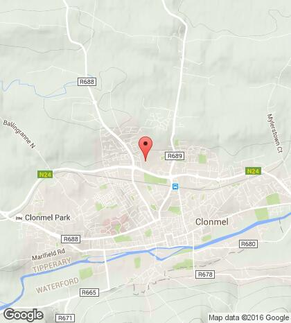

Multimedia showcase of work by LSAD Clonmel students.
The exhibition is now in its 13th year and is a fantastic opportunity for students to stand tall and show Clonmel what they can do in the area of Creative Multimedia and Digital Animation. Pen & Pixel was officially opened in 2014 by Clonmel Mayor Cllr Patrick English. The event included a variety of free workshops for secondary school students and a lively session with the well-known artist Des Dillon.
The highlight of Pen & Pixel is always the awards ceremony which recognises the outstanding achievement of students.
All of the work on display as part of Pen & Pixel is by the students from 2 full time programmes that run in Clonmel at L.I.T. - the B.Sc (Hons) in Creative Multimedia and the B.Sc (Hons) in Digital Animation Production.
LIT Clonmel is a young, vibrant campus situated in the town of Clonmel, Co. Tipperary. It is located on the ring road to the north of the town. It delivers programmes in Business, Marketing, Creative Multimedia, Digital Animation Production and Game Art and Design. The smallest of LIT’s campuses, it provides a relaxed yet creative learning space. Excellent access to teaching staff, learning resources and the creative media and animation studios create a friendly and familiar environment.
Creative Multimedia BSc
What is the programme about?
The programme is designed to provide you with knowledge and skills in digital media, design and technology. This includes the design and development of interactive systems, the production of high quality digital media content and the application of digital media in the promotion of products and services. You will be introduced to a range of areas that reflect established and emerging industry best practice including graphic design, digital audio and video production, motion graphics, 2D and 3D digital animation, digital media technology, web and mobile application development, casual game development, social media, marketing and communications. An integral part of the programme is the industrial placement module in year 3 where learners are provided with the opportunity to work with an external organisation for three months.
Who is the programme suited to?
This programme is suited to individuals that have an interest in design and creative technologies and the potential that digital media offers individuals, organisations and wider society.
Top 3 Reasons
1. Learn from industry practitioners - Lecturers on the Creative Multimedia suite of programmes at LIT LSAD Clonmel have worked across industry as web developers, software developers, video editors, special-effects artists, lead animators, visual-effects leads and animation directors. This includes working on animation and film titles such as I'm a Creepy Crawly, Granny O'Grimm, The Octonauts, Prince of Persia: The Sands of Time (2010), Paul (2011) & John Carter (2012).
2. Learn in a modern environment with state of the art equipment, software and online learning materials - Creative Multimedia students have access to over 100 PC & iMac workstations, a 2000 sq ft creative media studio, DSLR cameras, HD Video Cameras, drawing tables, Apple and Android tablet devices, an on-site audio recording studio, MIDI equipment and a video green screen. Students are also provided with access to leading creative media and animation software including the full Adobe CS Suite (Photoshop, Flash, Dreamweaver, Illustrator, Audition, Premier Pro, etc), Zbrush, Final Cut Pro X, Unity Pro, Toon Boom Harmony, Maya, 3D Studio Max, Reaper, etc. In addition, all students are provided with Lynda.com accounts which allows always-on access to self-directed learning materials.
3. Recognition of your degree - LIT Limerick School of Art and Design (LSAD) traces it roots back to 1852 and has a world renowned reputation in Art and Design.
Class Contact Hours
Year 1: 24 hours per week Year 2: 24 hours per week Year 3: 18 hours per week
Other Information
Creative Multimedia students at LIT LSAD Clonmel have been recognised both nationally and internationally in various competitions and awards including: Winner of New Media Category of the Institute of Designers of Ireland 2013 Graduate Award Winner of best factual film in Limerick Film Festival 2013 Joint Winner of the "Dare 2B Drink Aware" Multimedia Competition in 2012 Shortlisted in international competitions such as the Adobe Design Awards in 2012 Finalists in the European Wide ELIA Languages through Lenses film competition in 2012
Did You Know?
The digital economy in Ireland is growing 10 times faster than the traditional economy.
Gallery


Getting to Clonmel
While Clonmel has a limited train service, it is well serviced by Bus Éireann on a daily basis and is situated on the main N24 Limerick to Waterford route. A number of private operators also provide services to and from Clonmel.
Bus Eireann run daily buses to/from Clonmel from Limerick, Waterford, Kilkenny, Cork, Dublin. Irish Rail runs daily trains to/from Clonmel from Waterford and Limerick Junction (change for Limerick, Dublin, Cork).
Clonmel is approximately 80km from Limerick city, 50km from Waterford City and Kilkenny City, 95km from Cork City and 195km from Dublin City. 